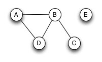

CS3240, HW3: Dictionaries, Test Cases and Unit-Testing
Version 1.0, 9/7/2017
Updates:
- None.
See Collab for the due date and time.
Note: Use the exact names fo files and methods given in the instructions below.
Collaboration Policy:
Coding in this homework is an individual assignment. You can ask fellow
students about the
question or the problem, but not for help on the design or
implementation. It is an Honor Violation to look at another student's
Python or test code, or to allow another student to look at your
Python or test code.
In Item 13 below you'll see that you have to create a file that
documents test cases. You can optionally work with a partner on this.
After you write the test-cases, each person must write the test code
independently (as noted above).
Students have asked if it's OK to use a Web search to find out how to
do things. Of course! What's not allowed is to search the web to find a
code solution to this homework or something close to it, and then
submit that as your own work.
Class Graph
In a file graph.py, create a class Graph with the
properties listed below. Assume graphs are simple graphs,
i.e. graphs that do not allow edges that connect a node to
itself. Also, note below where we said graphs should be assumed
to be undirected.
(Note: in the past graphs that were not
simple were called multigraphs,
but I see on Wolfram's site that a better term now is pseudograph.)
- Its constructor will optionally take a dictionary used to
initialize the graph. Each key in the dictionary will be a string
representing a node in the graph, and each value with be a list of
strings representing nodes that are adjacent to the key. (Just
like an adjacency list representation of a graph.) You can assume this
dictionary represents a valid simple graph. If your Graph object
has a data object inside it to hold the data in the parameter passed
in, make a copy of the data in the dictionary to avoid side-effects.
Example: The graph below could be stored in an object with this
call to the constructor:
g = Graph( { 'A': ['B', 'D'], 'B': ['A', 'D',
'C'], 'C': ['B'], 'D': ['A', 'B'], 'E' : [] } )

- Method
get_adjlist(self, node) will return the list
of nodes
adjacent to its parameter node, or None if the node is
not in the graph.
- Method
is_adjacent(self, node1, node2) will return
a boolean
value indicating if the second node is adjacent to the first. (If node1
is not in the graph, return False.)
- Method
num_nodes(self) will return the number of
nodes stored in
the graph.
- Method
__str__(self) will return a string
representation of the
data in
the graph, formatted like a Python dictionary. (Which is simple if you
store your data as a... <grin>)
- Method
__iter__(self) will allow you to iterate
over the nodes in
the graph. (Very easy if you understand how the function iter()
is used
with dictionaries.)
- Method
__contains__(self,node) will return a
boolean value to
indicate if the node is in the graph. (Again, very easy if you
understand how in is used
for dictionaries.) Note for your interest and
education: the operator in will work even if you do
not define __contains__, as long as Python can iterate over
your dictionary.
- Method
__len__(self) will do the same as
num_nodes().
- Method
add_node(self,node)
will add a new node to
the graph. This new node will have no other
nodes adjacent to it after it has been added. Return False if the node
is already in the graph and do not modify the graph in this case.
Return True if the node is added.
- Method
link_nodes(self, node1,
node2) makes the two nodes to be adjacent to each other in
the graph. Return False if the two nodes are already adjacent, and do
not modify the graph in this case. Return True if the edge is
added. Also, return False if node1 and node2 are the same, or if
either node is not in the graph.
- In class Graph, add the method
unlink_nodes(self, node1,
node2) that makes two adjacent nodes to be no longer adjacent.
Return False if the nodes were not initially adjacent or are not in the
graph, and do not modify
the graph in this case. Return True if the edge is removed.
- In class Graph, add the method
del_node(self, node)
that will remove the node from the graph and all edges for that node.
Return False if the node is not in the graph and do not modify the
graph in this case. Return True if the node and its edges are removed.
- Use the Excel document
testcase-doc-hw3.xlsx (found
in the Collab Resources folder called Homework F15 to document test
cases for the Graph class. Use these plans for your test cases to
plan what Python test code you'll write for that class (the next step).
- Our standard process says you should write those before or
during test-case coding, and not after. Do the right thing!
- You can work with one partner on creating the test-cases and in
creating this document. List both names in the file, and each person
turns in a copy of the file. Each person must write the code for
the test-cases after they have been written!
- You do not have to create test-cases or code unit-tests for the
constructor, __iter__, __str__,
- See the Constraints section below about the number of
test-cases you should have.
- Use the Python
unittest framework to write a test
class with test-functions for your Graph class.
- Name the file
test_graph.py.
- Each test-case from the XLS file should be implemented in its
own test-function. Include the test-case ID in the name of the
test-function somehow. For example, if the ID you put in the
Excel file is "G3" then its corresponding test-function could be named test_is_adjacent1_g3.
(This is to help us in grading.)
- Also, put the test-id into
the
docstring for your Python test-function, and also in the
msg
parameter for the unittest assertion methods.
- Each test-function will have code for one test-case, but there
may be more than one assertion in each test-case. For example, you
might have one assertion to test the contents of the graph, and another
to test the return value.
- Use
coverage.py (integrated with PyCharm) too
make
sure your unit-test code has good coverage of the methods in
Graph. Note: if you're not using PyCharm, you can download coverage.py
and run it in your IDE or from the command-line. See http://nedbatchelder.com/code/coverage/
.
If you're using PyCharm, it's not in the Community edition. Get the
Professional edition and establish a student account with JetBrains.
- Create another file
graph_functions.py and in it
write a function is_complete(grph) that will return True
if the Graph object grph
is a complete graph, i.e. every node is adjacent to every other node.
- Assume the graph is undirected. Do not assume it is
connected.
(If it's not connected, of course it's not complete.)
- If the parameter is not a Graph object, raise an
TypeError
exception with an appropriate message. You might find the Python
function isinstance useful. You can assume that if it is
a Graph object, it is a valid one (since our class above should only
create valid Graphs).
- Per mathworld.wolfram.com, graphs with zero nodes or one node
are complete graphs.
- In file
graph_functions.py write a function nodes_by_degree(grph).
This method should do the following:
- In a graph, a node's degree is the number of nodes that are
adjacent to it.
- Calculate the degree for each node, and represent that as a
tuple. Example,
('node3', 7) would mean that a
node with value 'node3' would have 7 adjacent nodes in the graph.
- Your function will return a list of such tuples, with the list
sorted in descending order by the degree. Example of return value:
[ ('node2', 3), ('node3', 2), ('node1',
2), ('node9', 1)]
This output would be for a graph with 4 nodes, where one node has
degree 3, two have degree 2, and one has degree 1.
- If the parameter is not a Graph object, raise a
TypeError
exception with an appropriate message. You might find the Python
function isinstance useful. You can assume that if it is
a Graph object, it is a valid one (since our class above should only
create valid Graphs).
- Use the Python nose package to run a file of tests called
test_graph_functions.py
that will carry out a good set of tests on these two functions
- Again, use
coverage.py (built-in to PyCharm or
independently) to
make sure your tests
have good coverage of these methods.
- You do not have to document these test cases in the .xls
file. However, it's a good idea to plan your test cases in
advance, just as you did for the Graph class.
Constraints:
- Be sure to name the files and each function exactly as listed
above.
- In every file, define the __author__ variable to be your UVa
email ID, e.g. mst3k.
- Comments are not required other than a one-line
Python docstring for each function and for the class.
- How many test cases are required, you ask.
For each function, we'll give a score for you testing the "normal"
case(s) and then a second score for how well you covered any edge,
boundary or extreme cases. So if you don't do as many of these
later test cases as we think you should, you might get 3 out of 4
points for this later, while earning 4 out of 4 for the "normal"
cases. We'll also then do a bit of rounding of this score.
You should think about small or extreme graph sizes, too. Bottom
line: if you miss a few obvious cases for a few methods, that will not
hurt your grade very much (if at all).
- If you're using OpenOffice or something and can only give us an
.xls file (not .xlsx), that's fine.
- In the lab that occurs after the deadline for this homework, you
may be asked to demonstrate you know the basics of how to use a
debugger to set breakpoints, step through lines of code, and see the
values of variables. So learn the debugger in PyCharm (or your
other favorite debugger/IDE) while doing this assignment.
- In files
graph.py and graph_functions.py
we will want to be able to import these as modules.
Therefore, any code that is outside of class definitions or function
definitions that would execute if you ran the file directly must be
controlled using the if __name__ ==
"__main__" technique.
Submission and Evaluation
Submit these files to Collab:
graph.pytest_graph.pygraph_functions.pytest_graph_functions.pytestcase-doc-hw3.xlsx- (possibly)
README.txt only there's something you
need to tell us
Zip these into a file called
cs3240-hw3.zip (use that name exactly!) and do not store the files in a
folder. In other words, when we unzip your Zip file, all the
files will unpack into the current directory.
Your grade will be based on: quality of test case documents;
correctness of methods in Graph and the two graph functions;
quality of test-code. We will do our best to reward students for
evidence of good professional practices.
Resources:
Sorting in Python: https://wiki.python.org/moin/HowTo/Sorting
The items below are better documented in the Python Tools doc on Collab.
Nose:
Unittest:
coverage.py